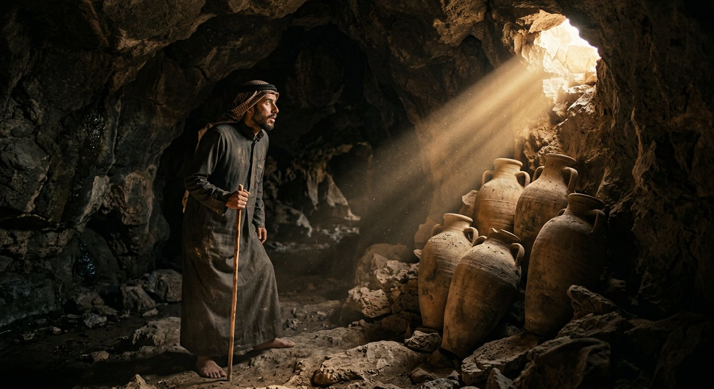
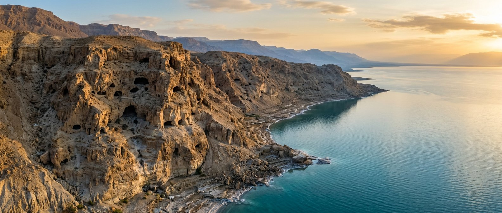
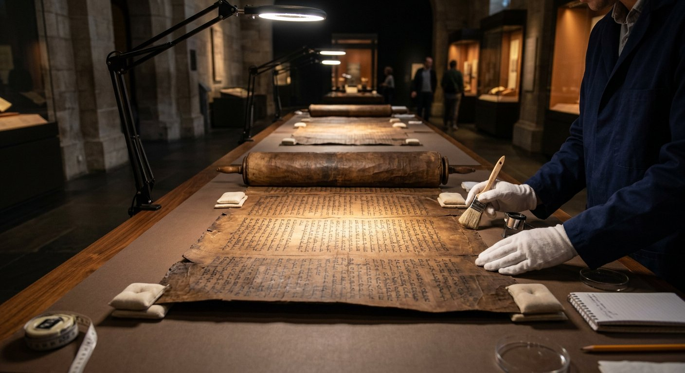
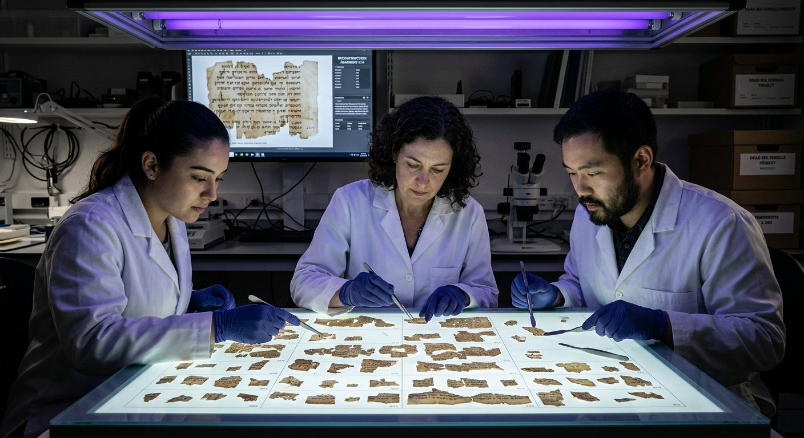
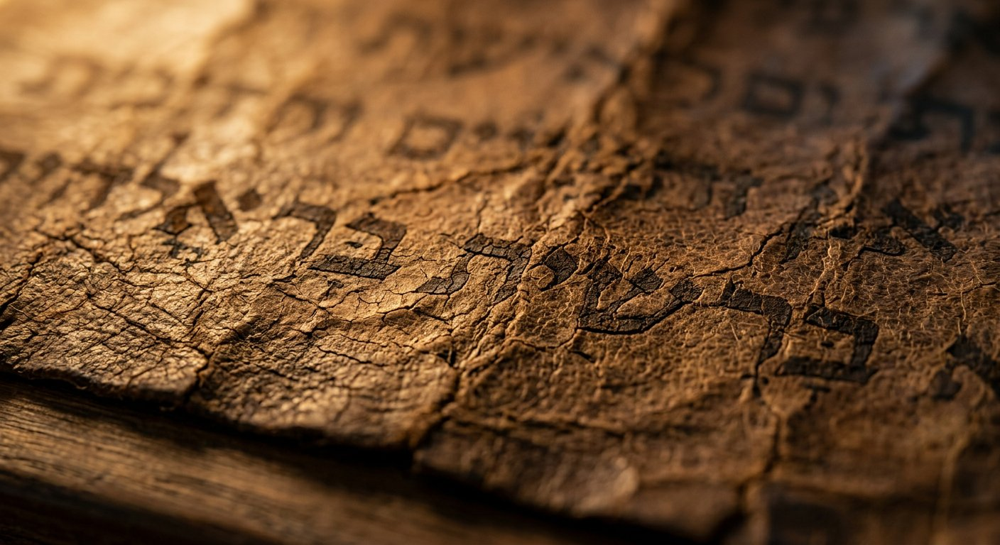

1947. Dans les grottes de Qumrân, au bord de la mer Morte, un jeune berger fait la
plus grande découverte archéologique du XXe siècle : 900 manuscrits qui
prouvent, preuves à l'appui, que le texte biblique nous est parvenu quasi intact.
⭐ Section phare
IIIe s. av. J.-C. – Ier s. ap. J.-C.
Textes bibliques : canoniquesTextes sectaires : hors canon
Qumrân · Désert de Judée
1947 · Qumrân, désert de Judée
La nuit où tout a changé
Au printemps 1947, un jeune berger bédouin de la tribu des Ta'amireh garde ses chèvres
au nord-est de la mer Morte. Pour faire rentrer une bête égarée, il lance une pierre
dans une ouverture de falaise — et le bruit d'un vase qui se brise lui répond. Il
découvre de grandes jarres d'argile dressées contre le mur, contenant
des rouleaux enveloppés de lin.
Entre 1947 et 1956, onze grottes autour de Qumrân livrent plus de
900 manuscrits en hébreu, en araméen et en grec, dont
200 textes bibliques. Tous les livres de l'Ancien Testament y sont
représentés — sauf Esther. Datés du IIIe siècle av. J.-C. au Ier
siècle ap. J.-C., ils sont un millénaire plus anciens que les plus
vieux manuscrits hébreux connus jusqu'alors. La comparaison avec le texte massorétique
devient enfin possible — et son verdict est saisissant.
11
Grottes explorées
900+
Manuscrits découverts
200
Textes bibliques
23
Livres de l'AT sur 24

Reconstitution : le berger découvre les jarres scellées de la grotte 1 — printemps 1947.
Écouter le récit complet
1947, Qumrân — la nuit où tout a changé
Élément interactif
La carte des 11 grottes
Cliquez sur les points dorés pour explorer chaque grotte et son contenu — de la grotte 1
du Grand Rouleau d'Ésaïe à la grotte 11 du Rouleau du Temple.

Chronologie des découvertes
De 1947 à nos jours
1947
Découverte fortuite de la grotte 1 par un berger bédouin. Le Grand Rouleau d'Ésaïe refait surface.
1949–1956
Exploration systématique des grottes 2 à 11 : plus de 900 manuscrits mis au jour.
1991
Après 44 ans d'accès réservé, l'intégralité des photographies des rouleaux est rendue publique.
2009
Numérisation haute résolution en accès libre : la Leon Levy Dead Sea Scrolls Digital Library.
2021
Nouveaux fragments publiés (« Cave of Horror », désert de Judée) : des versets des Douze Prophètes en grec.
2025
L'université de Groningue redate des fragments grâce au radiocarbone et à l'IA « Enoch ».
Le trésor de la grotte 1
Le Grand Rouleau d'Ésaïe (1QIsaᵃ)
Document
Rouleau de cuir
Datation
≈ 125 av. J.-C.
Dimensions
7,34 m · 17 feuilles
Conservation
Musée du Livre, Jérusalem
Déroulé avec émotion par les chercheurs, il mesure 7,34 mètres et
contient les 66 chapitres complets du prophète Ésaïe — le seul
manuscrit d'un livre biblique entier découvert à ce jour, et de loin le plus spectaculaire.
Daté d'environ 125 av. J.-C., il précède de mille ans
les plus anciens manuscrits massorétiques alors connus.
Sa calligraphie est d'une beauté saisissante : une écriture hébraïque carrée, régulière,
sans une hésitation. Les marges portent les corrections de la main du scribe lui-même.
Ce n'était pas un objet d'archives : il servait, se lisait, s'enseignait,
chaque jour, dans la communauté de Qumrân.
Canonique — Ancien Testament~95 % identique au texte massorétique

Le Grand Rouleau d'Ésaïe déroulé sur sa table de conservation — reconstitution museographique.
Musée du Livre, Jérusalem.
« Car un enfant nous est né, un fils nous a été donné, et la souveraineté reposera sur son
épaule. »
Ésaïe 9:6 — Grand Rouleau d'Ésaïe & Texte Massorétique
Note. Conformément à la convention du musée, le tétragramme
יהוה, lorsqu'il apparaît dans les
versets voisins (« Admirable, Conseiller, Dieu puissant… »), est traduit par
Jéhovah.
Élément interactif
Comparateur : Qumrân · Massorétique · Français
Rouleau d'Ésaïe (≈ 125 av. J.-C.)
כי ילד ילד לנו בן נתן לנו
Écriture consonantique ancienne, sans voyelles — comme sur le cuir du rouleau.
Texte Massorétique (≈ 920 ap. J.-C.)
כִּי-יֶלֶד יֻלַּד-לָנוּ, בֵּן נִתַּן-לָנוּ
Mêmes consonnes, vocalisées par les massorètes de Tibériade — mille ans plus tard.
Traduction française
« Car un enfant nous est né, un fils nous a été donné. »
Ésaïe 9:6 — le sens est strictement identique dans les deux manuscrits.
Ce que montre le comparateur. Sur l'ensemble
du livre, les deux témoins sont identiques à ~95 %. Les 5 % de différences
sont presque uniquement des variantes d'orthographe (écriture « pleine » plus ancienne,
plus tard « défective ») — aucune n'affecte le sens. En dix mille ans de
copie, la substance du texte est restée la même.
Écouter & entendre le texte
Le Rouleau d'Ésaïe — et sa lecture
Les autres trésors de Qumrân
Bibliques, sectaires — et clairement distingués
À côté des textes bibliques (canoniques), les grottes ont livré des écrits propres à la
communauté essénienne et des textes apocryphes. Le musée les présente séparément,
conformément à ses conventions éditoriales.
≈ IIe–Ier s. av. J.-C. · Grotte 11
Le Rouleau du Temple (11Q19)
Apocryphe — hors canon
Résumé. Avec ses 8,60 mètres, c'est le plus long
rouleau de Qumrân. Il développe une version étendue du Deutéronome et un code de lois
rituelles — organisation du Temple, purifications, fêtes — présenté comme la révélation
d'un Temple idéal. Texte précieux pour comprendre le judaïsme du Second Temple, mais
jamais intégré au canon biblique.
≈ Ier s. av. J.-C. · Damas & Qumrân
Le Document de Damas (CD)
Apocryphe — texte sectaire
Résumé. Texte essénien décrivant les règles de vie de la communauté :
purification, mariage, observance du sabbat, organisation commune, et condamnation des
« prêtres menteurs ». Deux manuscrits médiévaux le conservaient déjà dans la genizah du
Caire avant la découverte de Qumrân — un hasard providentiel pour la science.
≈ Ier s. av. J.-C. · Grotte 1
Le Rouleau de la Guerre (1QM)
Apocryphe — hors canon
Résumé. Vision apocalyptique de la guerre finale entre les
« Fils de la Lumière » et les « Fils des Ténèbres » :
plan de bataille, hymnes de combat, prières avant l'assaut. Texte prophétique et
liturgique de la communauté essénienne — expressément non canonique.
≈ Ier s. · Grotte 3
Le Rouleau de cuivre (3Q15)
Apocryphe — hors canon
Résumé. Deux bandes de cuivre gravées d'un inventaire au
trésor : 64 lieux de cachette mentionnés à Jérusalem et aux alentours, avec
des quantités d'or, d'argent et d'encens. Manuscrit unique en son genre — et mystère
toujours vivant : nul n'a retrouvé ces trésors.
La vie à Qumrân
Une communauté, des artisans du texte
La communauté essénienne au crépuscule — reconstitutionUne grotte au moment de la découverte

L'assemblage des fragments au XXIe siècle

L'encre hébraïque après 2 200 ans
Ce que Qumrân démontre
« En comparant les manuscrits de Qumrân au texte massorétique mille ans plus récent, les
chercheurs constatent une fidélité de transmission extraordinaire : le texte hébreu de la
Bible n'a quasiment pas changé en un millénaire de copie. En 2025, les
datations de l'université de Groningue ont même rapproché certains manuscrits de l'époque
même de leurs auteurs. La chaîne est continue. Le témoin est là — et il parle toujours. »
Synthèse des travaux publiés · Leon Levy DSS Library · Université de Groningue (2025)